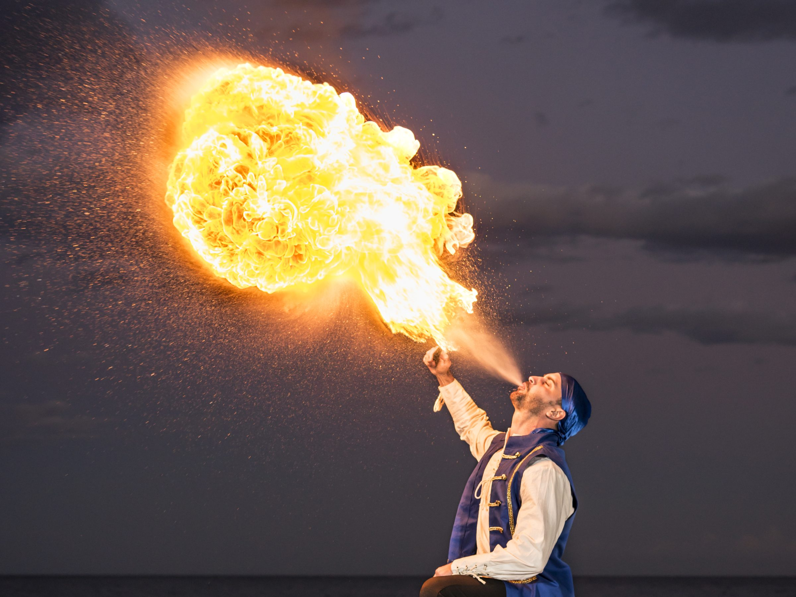
SFX & Stunts · Cine, TV y eventos
Efectos hechos
para rodar
Sangre artificial, todo lo necesario para un bonzo y protecciones certificadas para especialistas. Material probado en set, gran parte fabricado en nuestro propio laboratorio.
Don’t create it, just get the best
- Sweet Home
- El 47
- La Catedral del Mar
- Anacleto: Agente Secreto
- [REC]4: Apocalipsis
- Superlópez
- Malnazidos
- Modelo 77
- Contratiempo
- Sirāt
- Wasp Network
- The Diplomat
- Los Últimos Días
- Mindscape
- Polseres Vermelles
- Bajocero
- Mano de Hierro
- Hache
- 3 Bodas de Más
- 33 Días
- Això No És Suècia
- Bienvenidos a Edén
- Blood Metal Revenge
- Ciudad de Sombras
- Cucut
- Ebro: De la Cuna a la Batalla
- El Cuerpo
- El Cuerpo en Llamas
- El Día de Mañana
- El Pregón
- Fanático
- Foodie Love
- Girls with Balls
- Incidencias
- Indomable
- Ismael
- La Fossa
- La Niña de la Comunión
- La Octava Dimensión
- La Vampira de Barcelona
- Legado en los Huesos
- Loco por Ella
- Los Herederos de la Tierra
- Mira lo que Has Hecho
- Murieron por Encima de sus Posibilidades
- No Matarás
- Ofrenda a la Tormenta
- Olor de Colònia
- Orígenes Secretos
- Perdona si Te Llamo Amor
- Piratas: El Tesoro Perdido de Yáñez el Sanguinario
- Ruta Salvatge
- Sin Huellas
- Solo Química
- Summer Camp
- The Pelayos
- Tú También lo Harías
- Un Novio para mi Mujer
- Villorrio del Caudillo: Paletos y Cuchillos
- Èxode
Catálogo
Tres líneas de producto pensadas para el trabajo en set. Si necesitas algo que no está, pregúntanos: muchas cosas las fabricamos a medida.
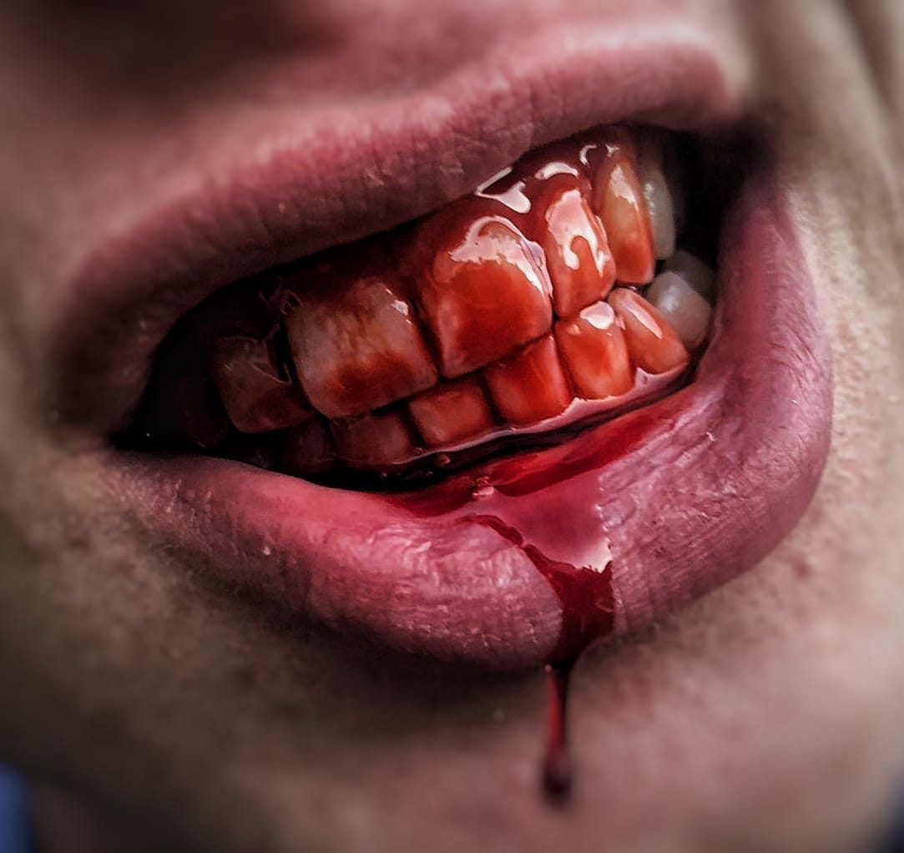
Sangres
Dry, Honey, Puddle y comestible: una textura para cada herida. También colorante y formato de 40 ml.
6 productos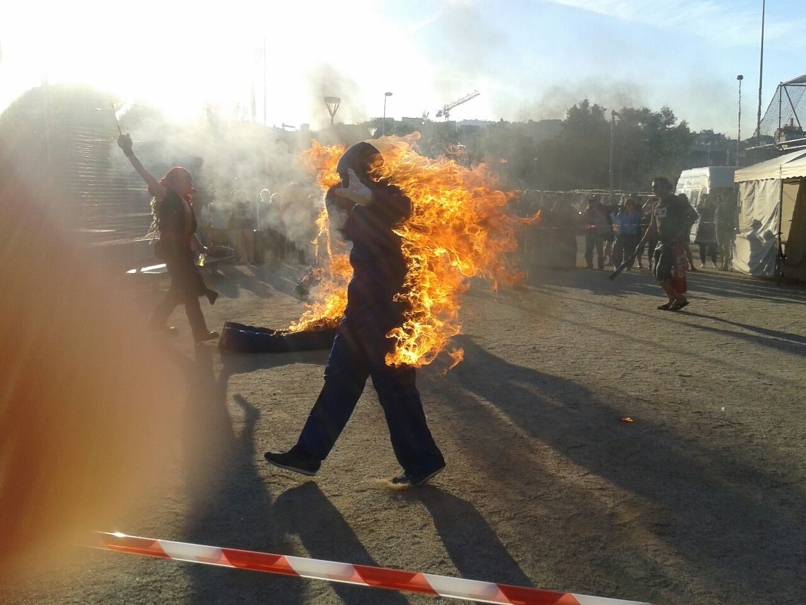
Fuego / Bonzos
Geles de fuego y gel protector, agua de fuego, retardante, fuego de colores y máscaras y guantes de silicona a medida.
8 productos
Protecciones
Chalecos, chaquetas, rodilleras, coderas, espinilleras y protecciones de pecho y espalda certificadas.
12 productosLaboratorio propio
Desarrollamos y ajustamos cada producto según lo que pide la escena: densidad, color, tiempo de secado o cómo reacciona con la luz.
- Fabricación propia. Muchos de nuestros productos los diseña nuestro equipo y no los encontrarás en otro sitio.
- A medida. Formatos, cantidades y acabados adaptados a cada rodaje.
- Seguridad. Certificados y fichas para que el material se use con garantías.
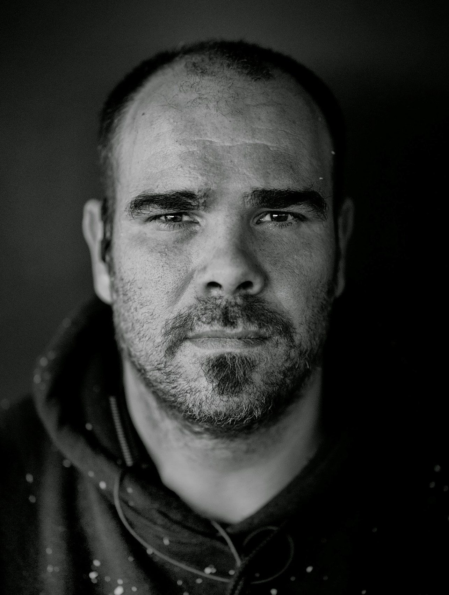
Detrás de creationsFX
creationsFX la fundó Oriol Tarrida, especialista con años de experiencia en efectos especiales y stunts, y formador de especialistas.
Ha trabajado en películas como Sweet Home, [REC], Los últimos días o Anacleto: Agente secreto. De esa experiencia en set nace la empresa: ofrecer solo el material que él mismo usaría. Si dudas qué producto te conviene, te asesoramos.
En acción
Algunos de nuestros productos en rodajes, pruebas y espectáculos.
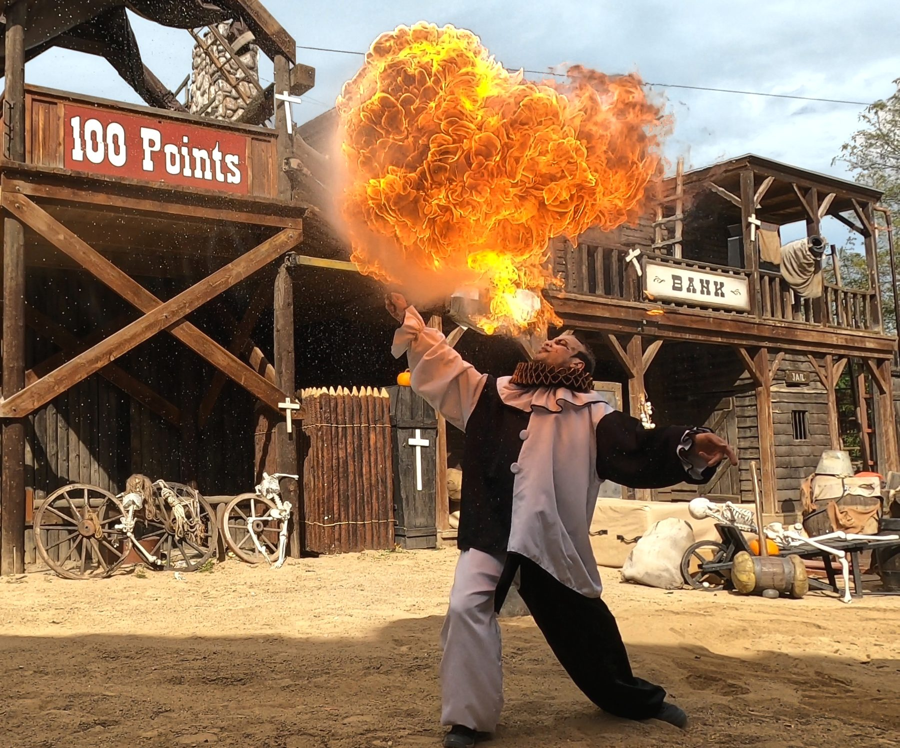
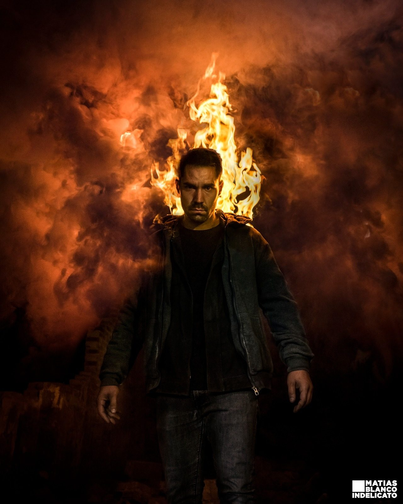
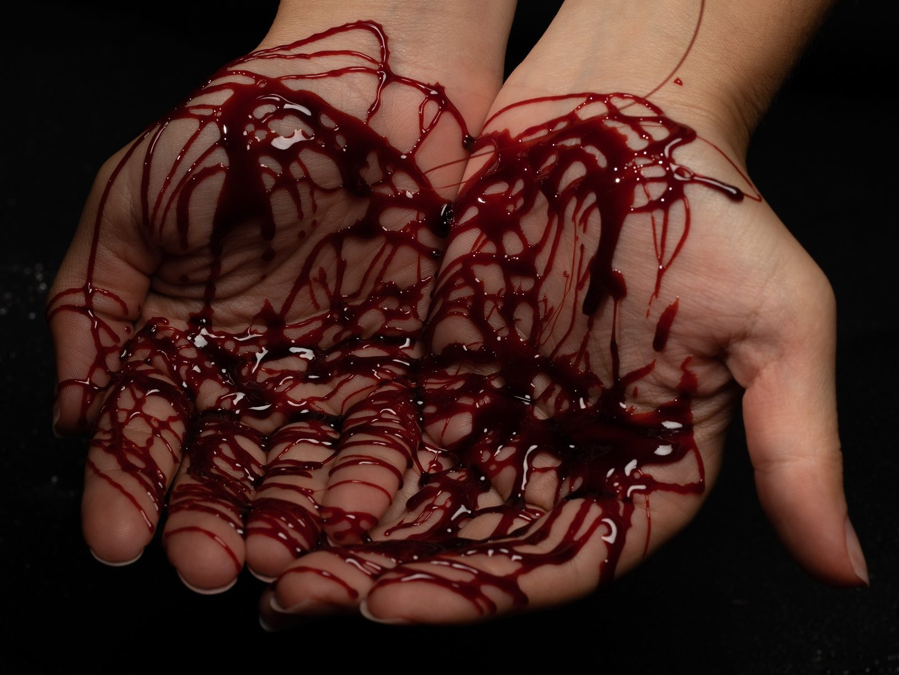
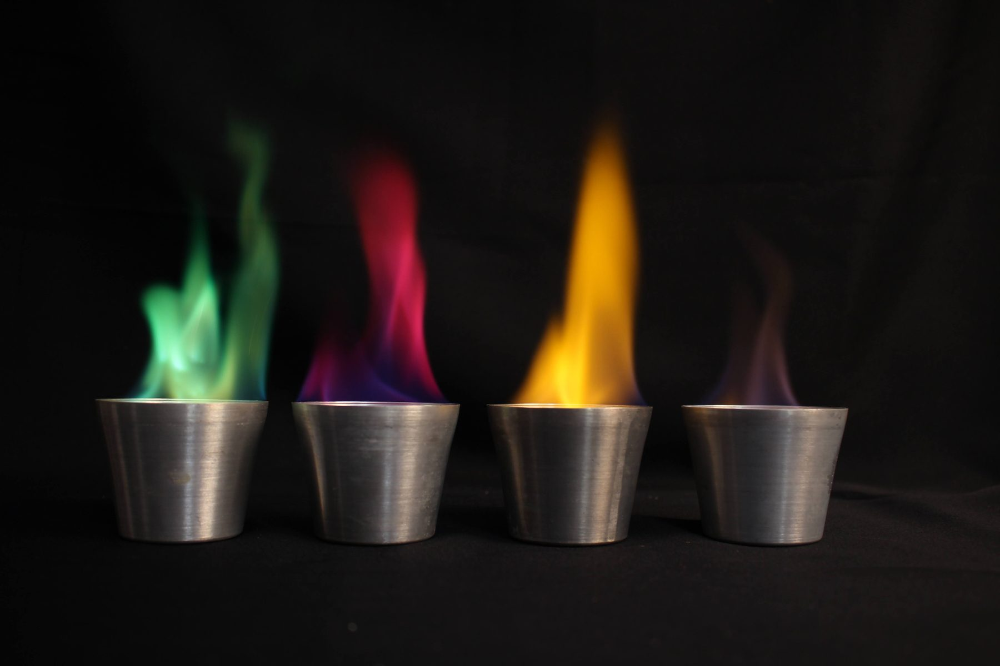
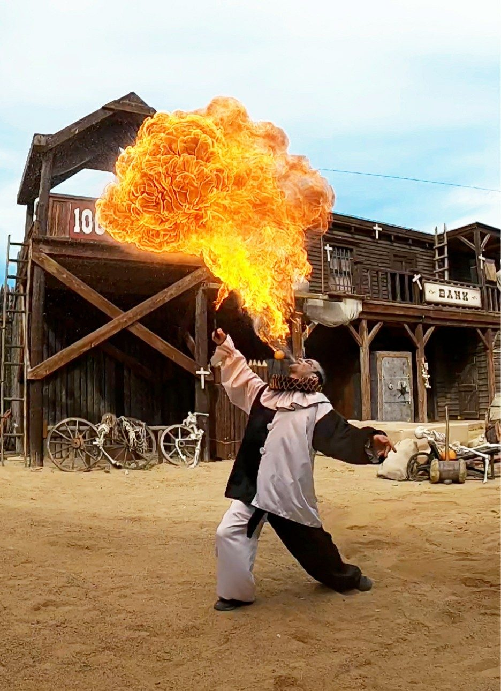
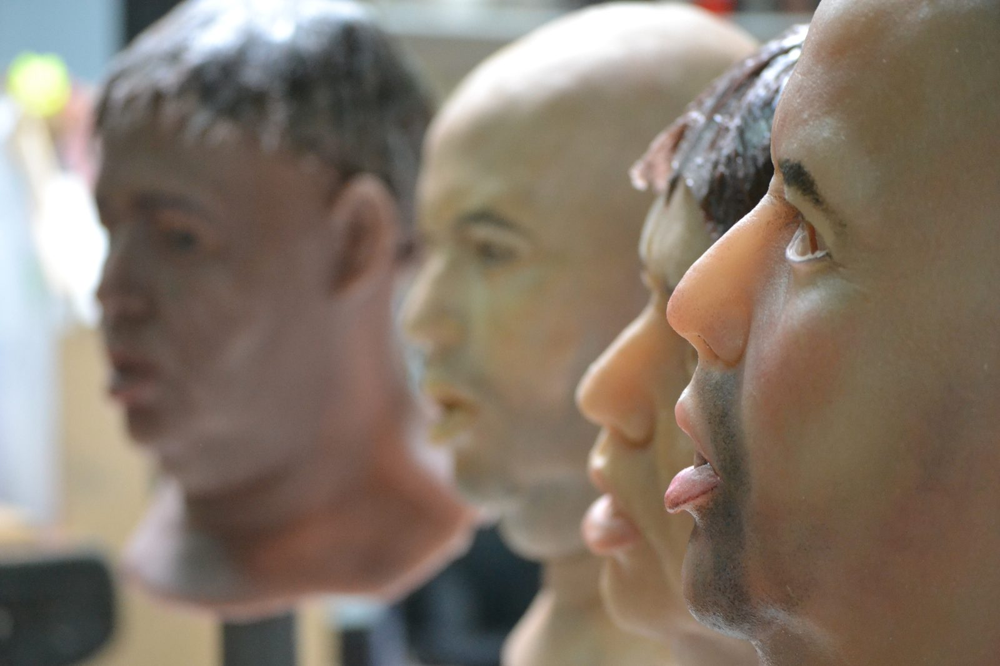
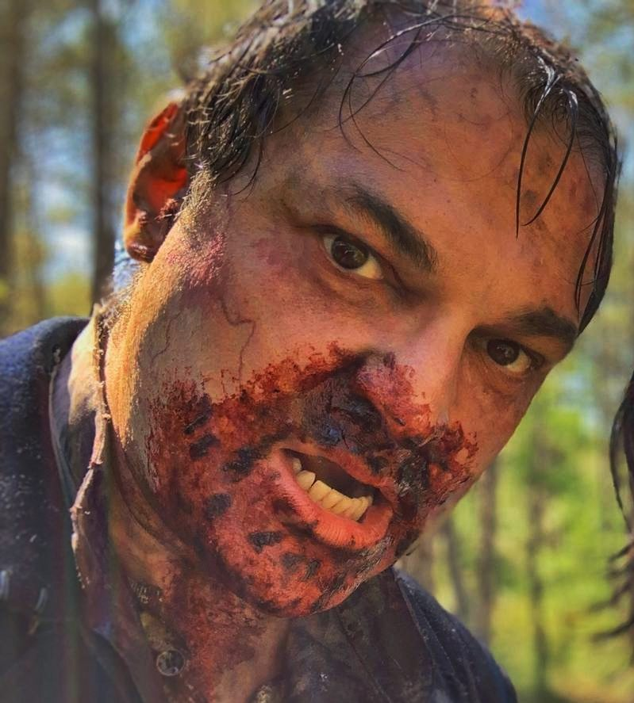
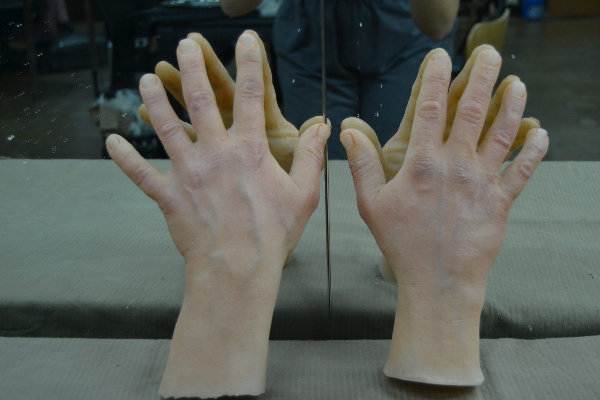
¿Qué necesitas
para tu rodaje?
Cuéntanos la escena y te recomendamos el producto, el formato y la cantidad.
Más servicios